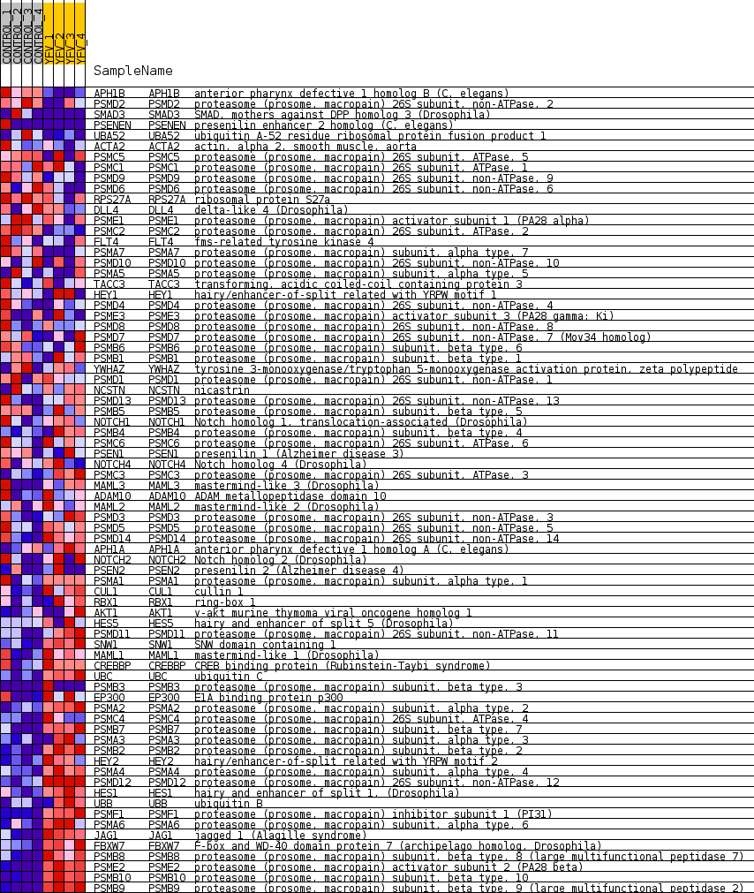
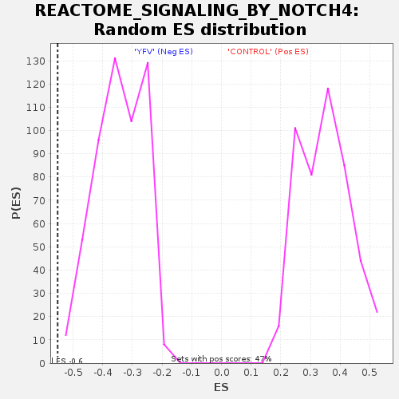

Profile of the Running ES Score & Positions of GeneSet Members on the Rank Ordered List
| Dataset | MATRIZ_GSE99081_collapsed_to_symbols.gsea_CLASE_99081.cls#CONTROL_versus_YFV |
| Phenotype | gsea_CLASE_99081.cls#CONTROL_versus_YFV |
| Upregulated in class | YFV |
| GeneSet | REACTOME_SIGNALING_BY_NOTCH4 |
| Enrichment Score (ES) | -0.55214715 |
| Normalized Enrichment Score (NES) | -1.6030074 |
| Nominal p-value | 0.0 |
| FDR q-value | 0.06711651 |
| FWER p-Value | 0.865 |
| SYMBOL | TITLE | RANK IN GENE LIST | RANK METRIC SCORE | RUNNING ES | CORE ENRICHMENT | |
|---|---|---|---|---|---|---|
| 1 | APH1B | anterior pharynx defective 1 homolog B (C. elegans) | 246 | 0.999 | 0.0126 | No |
| 2 | PSMD2 | proteasome (prosome, macropain) 26S subunit, non-ATPase, 2 | 711 | 0.738 | 0.0044 | No |
| 3 | SMAD3 | SMAD, mothers against DPP homolog 3 (Drosophila) | 1317 | 0.569 | -0.0172 | No |
| 4 | PSENEN | presenilin enhancer 2 homolog (C. elegans) | 1707 | 0.500 | -0.0273 | No |
| 5 | UBA52 | ubiquitin A-52 residue ribosomal protein fusion product 1 | 1969 | 0.488 | -0.0299 | No |
| 6 | ACTA2 | actin, alpha 2, smooth muscle, aorta | 2748 | 0.375 | -0.0676 | No |
| 7 | PSMC5 | proteasome (prosome, macropain) 26S subunit, ATPase, 5 | 3127 | 0.329 | -0.0818 | No |
| 8 | PSMC1 | proteasome (prosome, macropain) 26S subunit, ATPase, 1 | 3697 | 0.267 | -0.1096 | No |
| 9 | PSMD9 | proteasome (prosome, macropain) 26S subunit, non-ATPase, 9 | 3732 | 0.263 | -0.1044 | No |
| 10 | PSMD6 | proteasome (prosome, macropain) 26S subunit, non-ATPase, 6 | 3986 | 0.243 | -0.1132 | No |
| 11 | RPS27A | ribosomal protein S27a | 4134 | 0.232 | -0.1159 | No |
| 12 | DLL4 | delta-like 4 (Drosophila) | 4346 | 0.216 | -0.1229 | No |
| 13 | PSME1 | proteasome (prosome, macropain) activator subunit 1 (PA28 alpha) | 4391 | 0.212 | -0.1197 | No |
| 14 | PSMC2 | proteasome (prosome, macropain) 26S subunit, ATPase, 2 | 4826 | 0.173 | -0.1418 | No |
| 15 | FLT4 | fms-related tyrosine kinase 4 | 4962 | 0.162 | -0.1456 | No |
| 16 | PSMA7 | proteasome (prosome, macropain) subunit, alpha type, 7 | 5238 | 0.134 | -0.1589 | No |
| 17 | PSMD10 | proteasome (prosome, macropain) 26S subunit, non-ATPase, 10 | 5332 | 0.127 | -0.1611 | No |
| 18 | PSMA5 | proteasome (prosome, macropain) subunit, alpha type, 5 | 5659 | 0.102 | -0.1784 | No |
| 19 | TACC3 | transforming, acidic coiled-coil containing protein 3 | 5895 | 0.085 | -0.1906 | No |
| 20 | HEY1 | hairy/enhancer-of-split related with YRPW motif 1 | 6054 | 0.071 | -0.1984 | No |
| 21 | PSMD4 | proteasome (prosome, macropain) 26S subunit, non-ATPase, 4 | 6348 | 0.049 | -0.2152 | No |
| 22 | PSME3 | proteasome (prosome, macropain) activator subunit 3 (PA28 gamma; Ki) | 6661 | 0.029 | -0.2337 | No |
| 23 | PSMD8 | proteasome (prosome, macropain) 26S subunit, non-ATPase, 8 | 6710 | 0.026 | -0.2359 | No |
| 24 | PSMD7 | proteasome (prosome, macropain) 26S subunit, non-ATPase, 7 (Mov34 homolog) | 6854 | 0.018 | -0.2443 | No |
| 25 | PSMB6 | proteasome (prosome, macropain) subunit, beta type, 6 | 7048 | 0.008 | -0.2560 | No |
| 26 | PSMB1 | proteasome (prosome, macropain) subunit, beta type, 1 | 9745 | -0.014 | -0.4224 | No |
| 27 | YWHAZ | tyrosine 3-monooxygenase/tryptophan 5-monooxygenase activation protein, zeta polypeptide | 9782 | -0.016 | -0.4242 | No |
| 28 | PSMD1 | proteasome (prosome, macropain) 26S subunit, non-ATPase, 1 | 10102 | -0.030 | -0.4431 | No |
| 29 | NCSTN | nicastrin | 10343 | -0.047 | -0.4566 | No |
| 30 | PSMD13 | proteasome (prosome, macropain) 26S subunit, non-ATPase, 13 | 10422 | -0.053 | -0.4600 | No |
| 31 | PSMB5 | proteasome (prosome, macropain) subunit, beta type, 5 | 10473 | -0.058 | -0.4614 | No |
| 32 | NOTCH1 | Notch homolog 1, translocation-associated (Drosophila) | 10684 | -0.074 | -0.4724 | No |
| 33 | PSMB4 | proteasome (prosome, macropain) subunit, beta type, 4 | 10839 | -0.088 | -0.4795 | No |
| 34 | PSMC6 | proteasome (prosome, macropain) 26S subunit, ATPase, 6 | 11010 | -0.102 | -0.4871 | No |
| 35 | PSEN1 | presenilin 1 (Alzheimer disease 3) | 11269 | -0.127 | -0.4996 | No |
| 36 | NOTCH4 | Notch homolog 4 (Drosophila) | 11472 | -0.146 | -0.5080 | No |
| 37 | PSMC3 | proteasome (prosome, macropain) 26S subunit, ATPase, 3 | 11528 | -0.149 | -0.5073 | No |
| 38 | MAML3 | mastermind-like 3 (Drosophila) | 11650 | -0.160 | -0.5103 | No |
| 39 | ADAM10 | ADAM metallopeptidase domain 10 | 11737 | -0.168 | -0.5109 | No |
| 40 | MAML2 | mastermind-like 2 (Drosophila) | 11767 | -0.171 | -0.5080 | No |
| 41 | PSMD3 | proteasome (prosome, macropain) 26S subunit, non-ATPase, 3 | 11846 | -0.178 | -0.5078 | No |
| 42 | PSMD5 | proteasome (prosome, macropain) 26S subunit, non-ATPase, 5 | 11911 | -0.185 | -0.5067 | No |
| 43 | PSMD14 | proteasome (prosome, macropain) 26S subunit, non-ATPase, 14 | 11924 | -0.186 | -0.5022 | No |
| 44 | APH1A | anterior pharynx defective 1 homolog A (C. elegans) | 12732 | -0.269 | -0.5447 | Yes |
| 45 | NOTCH2 | Notch homolog 2 (Drosophila) | 12816 | -0.279 | -0.5420 | Yes |
| 46 | PSEN2 | presenilin 2 (Alzheimer disease 4) | 12879 | -0.285 | -0.5379 | Yes |
| 47 | PSMA1 | proteasome (prosome, macropain) subunit, alpha type, 1 | 12891 | -0.287 | -0.5306 | Yes |
| 48 | CUL1 | cullin 1 | 12992 | -0.300 | -0.5285 | Yes |
| 49 | RBX1 | ring-box 1 | 13011 | -0.302 | -0.5212 | Yes |
| 50 | AKT1 | v-akt murine thymoma viral oncogene homolog 1 | 13167 | -0.324 | -0.5218 | Yes |
| 51 | HES5 | hairy and enhancer of split 5 (Drosophila) | 13337 | -0.343 | -0.5227 | Yes |
| 52 | PSMD11 | proteasome (prosome, macropain) 26S subunit, non-ATPase, 11 | 13564 | -0.374 | -0.5263 | Yes |
| 53 | SNW1 | SNW domain containing 1 | 13585 | -0.378 | -0.5170 | Yes |
| 54 | MAML1 | mastermind-like 1 (Drosophila) | 14084 | -0.457 | -0.5351 | Yes |
| 55 | CREBBP | CREB binding protein (Rubinstein-Taybi syndrome) | 14125 | -0.467 | -0.5246 | Yes |
| 56 | UBC | ubiquitin C | 14182 | -0.479 | -0.5147 | Yes |
| 57 | PSMB3 | proteasome (prosome, macropain) subunit, beta type, 3 | 14438 | -0.500 | -0.5166 | Yes |
| 58 | EP300 | E1A binding protein p300 | 14599 | -0.516 | -0.5121 | Yes |
| 59 | PSMA2 | proteasome (prosome, macropain) subunit, alpha type, 2 | 14672 | -0.535 | -0.5017 | Yes |
| 60 | PSMC4 | proteasome (prosome, macropain) 26S subunit, ATPase, 4 | 14766 | -0.557 | -0.4919 | Yes |
| 61 | PSMB7 | proteasome (prosome, macropain) subunit, beta type, 7 | 14794 | -0.565 | -0.4779 | Yes |
| 62 | PSMA3 | proteasome (prosome, macropain) subunit, alpha type, 3 | 14958 | -0.609 | -0.4710 | Yes |
| 63 | PSMB2 | proteasome (prosome, macropain) subunit, beta type, 2 | 15120 | -0.662 | -0.4625 | Yes |
| 64 | HEY2 | hairy/enhancer-of-split related with YRPW motif 2 | 15297 | -0.742 | -0.4528 | Yes |
| 65 | PSMA4 | proteasome (prosome, macropain) subunit, alpha type, 4 | 15508 | -0.833 | -0.4426 | Yes |
| 66 | PSMD12 | proteasome (prosome, macropain) 26S subunit, non-ATPase, 12 | 15525 | -0.844 | -0.4201 | Yes |
| 67 | HES1 | hairy and enhancer of split 1, (Drosophila) | 15594 | -0.870 | -0.4001 | Yes |
| 68 | UBB | ubiquitin B | 15642 | -0.918 | -0.3774 | Yes |
| 69 | PSMF1 | proteasome (prosome, macropain) inhibitor subunit 1 (PI31) | 15701 | -0.986 | -0.3536 | Yes |
| 70 | PSMA6 | proteasome (prosome, macropain) subunit, alpha type, 6 | 15762 | -1.053 | -0.3280 | Yes |
| 71 | JAG1 | jagged 1 (Alagille syndrome) | 15931 | -1.359 | -0.3006 | Yes |
| 72 | FBXW7 | F-box and WD-40 domain protein 7 (archipelago homolog, Drosophila) | 16001 | -1.606 | -0.2601 | Yes |
| 73 | PSMB8 | proteasome (prosome, macropain) subunit, beta type, 8 (large multifunctional peptidase 7) | 16014 | -1.655 | -0.2148 | Yes |
| 74 | PSME2 | proteasome (prosome, macropain) activator subunit 2 (PA28 beta) | 16061 | -1.905 | -0.1646 | Yes |
| 75 | PSMB10 | proteasome (prosome, macropain) subunit, beta type, 10 | 16150 | -2.694 | -0.0951 | Yes |
| 76 | PSMB9 | proteasome (prosome, macropain) subunit, beta type, 9 (large multifunctional peptidase 2) | 16195 | -3.614 | 0.0027 | Yes |

